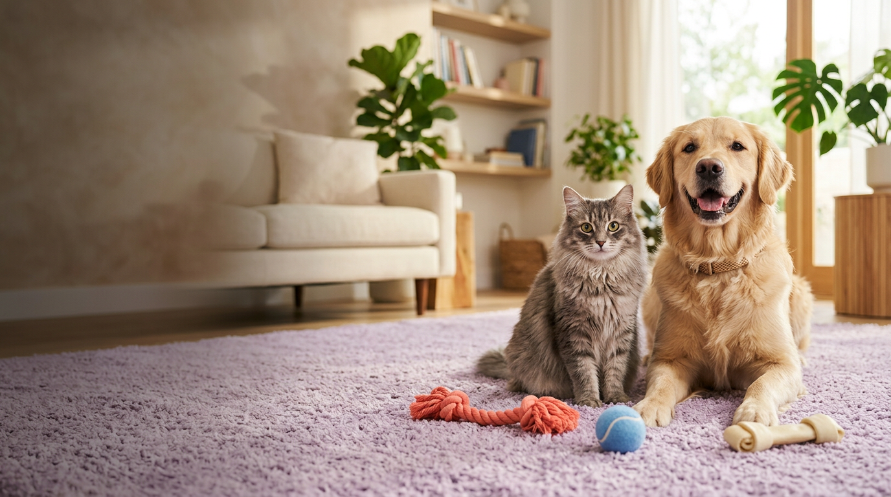

CHRONOLYTE AI · PET-SHOP WEBSITE CONCEPT
GOOD STUFF
FOR GOOD PETS.
A warm, high-energy pet-shop storefront for the vertically scrolling feed: friendly typography, jewel-bright accents, editorial pet photography and clear shopping actions. The site fills the full frame edge-to-edge in the Reel.
CREAM · #FFF6EA
INK · #29233A
PURPLE · #6B4EFF
CORAL · #FF6D7A
LIME · #C8F16D
SKY · #91DDF1
HERO TYPE · SPACE GROTESK
YOUR NEXT
CUSTOMER
IS SCROLLING.
CUSTOMER
IS SCROLLING.
PET-SHOP WEBSITE CONCEPT
SHOP THE GOOD STUFF →
Body copy uses DM Sans. Text is drawn as clean vector UI, never baked into the photographs.
PHOTO DIRECTION · TEXT-FREE AI ASSETS

DOGS
CATS
WALK
PLAY